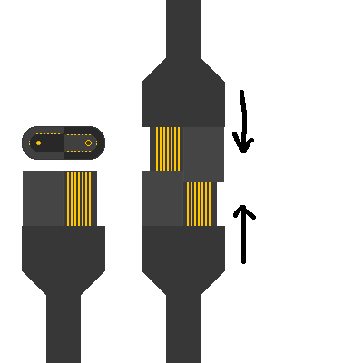

link to this page
USB-E connector and corresponding standards
 USB type E, the reversible androgynous USB connector with 32 data pins and 2 extra enlarged dedicated to power delivery pins.
USB type E, the reversible androgynous USB connector with 32 data pins and 2 extra enlarged dedicated to power delivery pins.
Much like the previous type D it does not have a plug and socket but rather a single connector that interfaces with an exact copy of itself on both ends, but unlike the type D brings back the reversibility originally implemented in type C that allows the connection to still be made even if one of the connectors is rotated by half a turn.
The polarity of the large power pins is decided at connection time rather than strictly assigned by the design, which is addressed by a rectifying circuit at the sink end.
notable mention: USB-D

An earlier androgynous USB connector with 32 data pins and 2 large power pins.
It improves over the C-type connector by introducing a self-interfacing connector which is both the plug and the socket at the same time.
Unlike the C-type connector it could no longer be inserted while rotated by half a turn, which is a feature later brought back by the E-type connector.
Despite the existence of the new E-type connector which is broadly considered an improvement, the D-type connector is still somewhat common.
This is easily addressed with a cable that has an E-type connector on one end and a D-type on the other, as the two actually adhere to the same overall USB standard version, which is the reason the two have the same number of pins of each type.